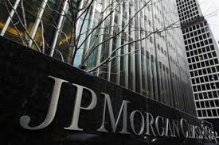

JPMorgan Chase & Co. is a multinational banking and financial services
holding company headquartered in New York City. It is the largest bank in the
United States, the world's sixth largest bank by total assets, with total assets
of US$2.35 trillion, and the world's most valuable bank by market
capitalization.
It is a major provider of financial services, and according to
Forbes magazine is the world's sixth largest public company based upon a
composite ranking.The hedge fund unit of JPMorgan Chase is the second largest
hedge fund in the United States. The company was formed in 2000, when Chase
Manhattan Corporation merged with J.P. Morgan & Co.
The J.P. Morgan brand, historically known as Morgan, is used by the investment
banking, asset management, private banking, private wealth management, and
treasury & securities services divisions.
Fiduciary activity within private
banking and private wealth management is done under the aegis of JPMorgan Chase
Bank, N.A. the actual trustee. The Chase brand is used for credit card services
in the United States and Canada, the bank's retail banking activities in the
United States, and commercial banking. The corporate headquarters is located at
270 Park Avenue in Midtown Manhattan, New York City.
The retail and commercial
bank is headquartered in Chase Tower, Chicago Loop, Chicago, Illinois,
U.S.JPMorgan Chase & Co. is considered to be a universal bank.
JPMorgan Chase is one of the Big Four banks of the United States, along with
Bank of America, Citigroup, and Wells Fargo. According to Bloomberg, as of
October 2011, JPMorgan Chase had surpassed Bank of America as the largest U.S.
bank by assets.
The New York Chemical Manufacturing Company was founded in 1823 as a maker of
various chemicals. In 1824, the company amended its charter to perform banking
activities and created the Chemical Bank of New York.
After 1851, the bank was
separated from its parent and grew organically and through a series of mergers,
most notably with Corn Exchange Bank in 1954, Texas Commerce Bank (a large bank
in Texas) in 1986, and Manufacturer's Hanover Trust Company in 1991 (the first
major bank merger "among equals").
In the 1980s and early 1990s, Chemical
emerged as one of the leaders in the financing of leveraged buyout transactions.
In 1984, Chemical launched Chemical Venture Partners to invest in private equity
transactions alongside various financial sponsors.
By the late 1980s, Chemical
developed its reputation for financing buyouts, building a syndicated leveraged
finance business and related advisory businesses under the auspices of
pioneering investment banker, Jimmy Lee.
At many points throughout this history,
Chemical Bank was the largest bank in the United States (either in terms of
assets or deposit market share).
In 1996, Chemical Bank acquired Chase Manhattan. Although Chemical was the
nominal survivor, it took the better-known Chase name. To this day, JPMorgan
Chase retains Chemical's pre-1996 stock price history, as well as Chemical's
former headquarters at 270 Park Avenue.